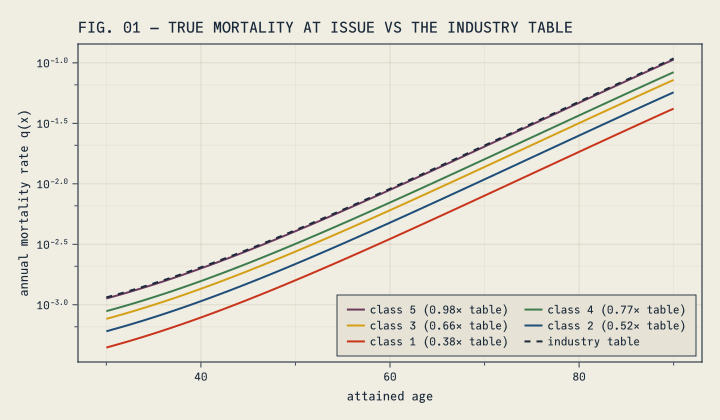
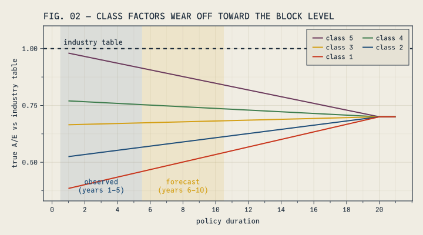
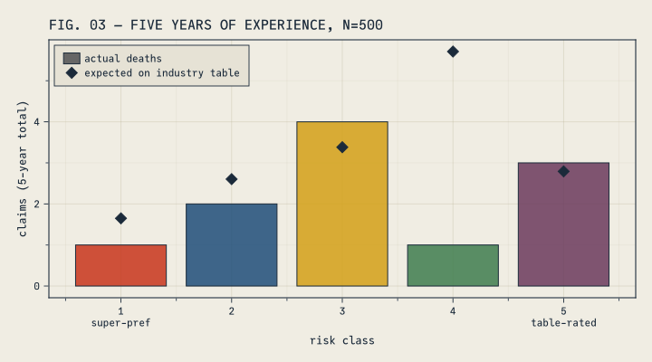
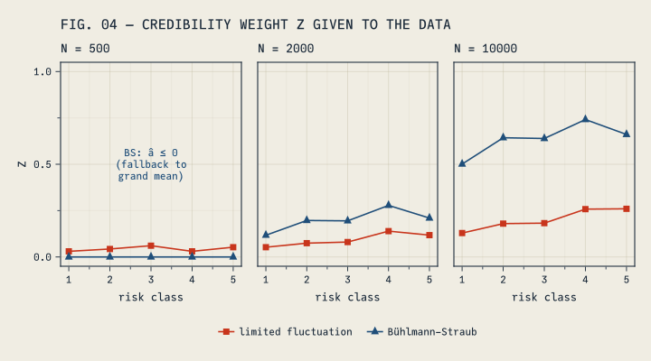
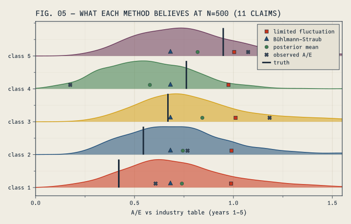
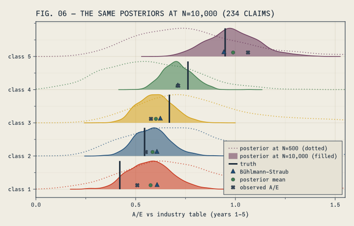
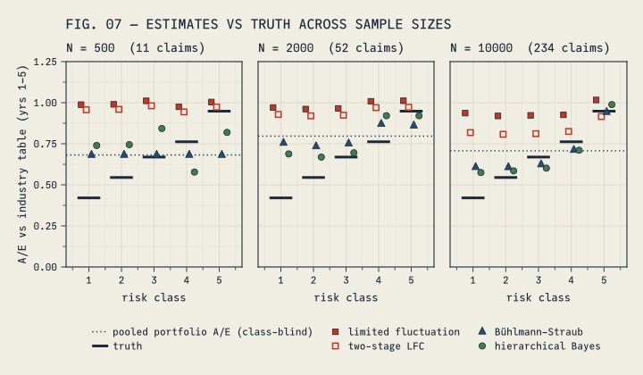
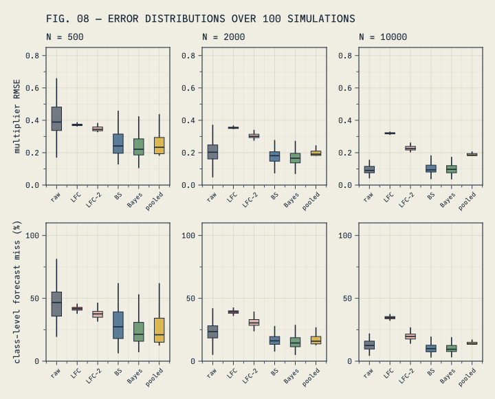
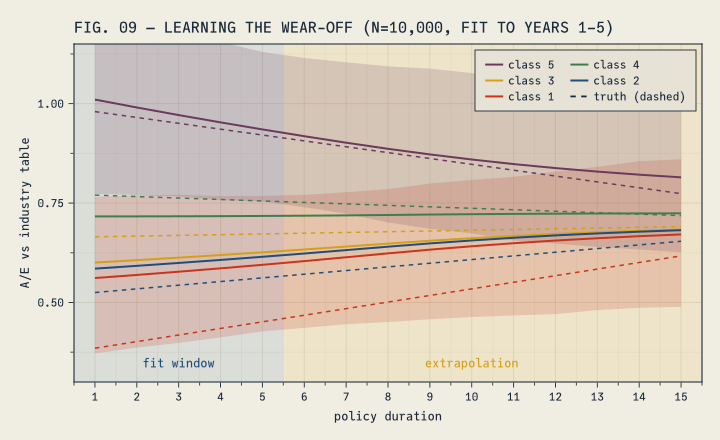

using Random, Distributions, DataFrames, DataFramesMeta, StatsBase, Statistics
using Turing, MCMCChains, StatsFuns, ThreadsX, KernelDensity
using Logging
Logging.disable_logging(Logging.Warn) # quiet Turing's per-fit chatter
using CairoMakie
# Apply the site's custom Makie plot theme (cassette futurism).
include(joinpath(@__DIR__, "..", "..", "assets", "themes", "cassette_futurism.jl"))
set_theme!(cassette_futurism_theme())Your best customers are the ones you know least about.
Suppose you launched a new preferred risk class structure five years ago. The underwriting team is proud of it. The super-preferred class — the healthiest 10% of applicants — has produced zero death claims. What is its mortality?
The textbook credibility answer: zero claims means zero credibility, so use the expected basis. But the expected basis is an industry or company table that knows nothing about your new class structure. And the threshold for full credibility — about 1,082 claims under the standard limited fluctuation parameters — may never arrive for a small preferred class.
This post tests a thesis: that traditional credibility methods struggle when observations are scarce, and that a Bayesian hierarchical model can learn more from the same data. Rather than argue it, we will run an experiment. Simulate a block of business where the true mortality is known. Hide the truth. Give each method only the data an actuary would actually see, and check which one comes closest.
The experiment
The setup, in brief:
- An industry ultimate mortality table (parametric Makeham). This is the expected basis every method is handed.
- A block whose true mortality runs at 70% of that table. This is the realistic situation for well-underwritten business measured against a broad industry table.
- Five risk classes making up 10% / 20% / 20% / 30% / 20% of issues, with true class factors at issue from 0.55× (super-preferred) to 1.40× (table-rated). Underwriting information wears off: each class factor grades linearly to 1.0 over 20 years, so class differences are widest at issue and fade with duration.
- Cohorts of \(N \in \{500, 2000, 10000\}\) lives issued at ages drawn from \(\mathrm{Normal}(50, 10)\), observed for 5 policy years.
- Every method — traditional and Bayesian alike — gets the same expected basis: the industry table, with no level adjustment and no class adjustment. Each must learn both the level and the class structure from claims alone.
So there are two things to learn, and the expected basis knows neither: the block runs well below the table, and the classes differ from one another. The table being wrong is deliberate — a prior that is already correct leaves nothing to learn, and a newly underwritten block can differ materially from a broad industry table. The question is which methods notice, and how fast.
Ground truth
The truth has three parts, all in the next code cell. The industry table is a Makeham curve, \(\mu(x) = A + B c^x\), converted to annual rates. The block’s true aggregate level is 70% of that table. And each class’s factor starts at its issue value (0.55× to 1.40×) and grades linearly to 1.0 by duration 20 — underwriting information fades. Putting it together: true_q = 0.70 × table × class_factor(duration).
const A_MAK, B_MAK, C_MAK = 5.0e-4, 4.7e-5, 1.09
base_q(age) = 1 - exp(-(A_MAK + B_MAK * C_MAK^age * (C_MAK - 1) / log(C_MAK))) # the industry table
const SHARES = [0.1, 0.2, 0.2, 0.3, 0.2] # class mix at issue
const MULT = [0.55, 0.75, 0.95, 1.1, 1.4] # class factors at issue
const LEVEL = 0.7 # the block's true level vs the industry table
class_factor(t, cls) = 1 + (MULT[cls] - 1) * max(0.0, 1 - (t - 1) / 19) # wears off to 1.0 by t=20
true_q(age, dur, cls) = min(1.0, LEVEL * base_q(age) * class_factor(dur, cls))FIG. 01 plotting code
let
f = Figure(size=(720, 420))
ax = Axis(
f[1, 1];
title="FIG. 01 — TRUE MORTALITY AT ISSUE VS THE INDUSTRY TABLE",
xlabel="attained age", ylabel="annual mortality rate q(x)", yscale=log10
)
ages = 30:90
for c in 5:-1:1
lines!(
ax, ages, LEVEL .* base_q.(ages) .* MULT[c];
color=CASSETTE_PALETTE[c], linewidth=2,
label="class $c ($(round(LEVEL * MULT[c], digits = 2))× table)"
)
end
lines!(
ax, ages, base_q.(ages);
color=CF_INK, linestyle=:dash, linewidth=2, label="industry table"
)
axislegend(ax, position=:rb, nbanks=2)
f
end
Every class sits below the dashed industry table at issue — even table-rated class 5, at 0.70 × 1.40 ≈ 0.98, barely touches it. The class curves then drift toward the block level of 0.70 × table as the factors wear off:
FIG. 02 plotting code
let
f = Figure(size=(720, 400))
ax = Axis(
f[1, 1];
title="FIG. 02 — CLASS FACTORS WEAR OFF TOWARD THE BLOCK LEVEL",
xlabel="policy duration", ylabel="true A/E vs industry table",
xticks=0:2:20
)
vspan!(ax, 0.5, 5.5; color=(CF_BLUE, 0.1))
vspan!(ax, 5.5, 10.5; color=(CF_AMBER, 0.12))
hlines!(ax, [1.0]; color=CF_INK, linestyle=:dash, linewidth=2)
for c in 5:-1:1
lines!(
ax, 1:21, [LEVEL * class_factor(t, c) for t in 1:21];
color=CASSETTE_PALETTE[c], linewidth=2, label="class $c"
)
end
text!(
ax, 3, 0.36; text="observed\n(years 1–5)", align=(:center, :bottom),
color=CF_BLUE, fontsize=12
)
text!(
ax, 8, 0.36; text="forecast\n(years 6–10)", align=(:center, :bottom),
color=CF_AMBER, fontsize=12
)
text!(
ax, 0.7, 1.01; text="industry table", align=(:left, :bottom),
color=CF_INK, fontsize=12
)
ylims!(ax, 0.33, 1.1)
axislegend(ax, position=:rt, nbanks=2)
f
end
At issue the classes span 0.39 to 0.98 of the table; by duration 20 they all converge to the block level of 0.70. The observation window (blue) is where class gaps are widest; by the forecast window (amber) they have already narrowed. None of this is told to the methods.
From here on, the methods see only three things: death counts, exposures, and the industry table. We put LEVEL, MULT, and class_factor away until the end, when we compare each method’s estimates against the truth.
Simulating five years of experience
Each life gets a class (sampled by share), an issue age, and then an annual coin flip against its true mortality rate until it dies or the observation period ends. We aggregate to cells of class × duration × attained age, attaching the expected claims on the industry-table basis — the quantity every method will compare actuals against. (One convention to note: a death earns a full year of exposure in its year of death — annual initial exposure, the convention that matches estimating an annual death probability \(q\). Central exposure, the other common convention, would count only the fraction of the year actually lived.)
function simulate_cohort(N, rng)
cls = sample(rng, 1:5, Weights(SHARES), N)
ages = clamp.(round.(Int, rand(rng, Normal(50, 10), N)), 30, 75)
return DataFrame(class=cls, issue_age=ages)
end
function simulate_experience(cohort, rng; years=5)
cells = Dict{Tuple{Int,Int,Int},Vector{Float64}}() # (class,dur,age) => [exposure, deaths]
inforce = Tuple{Int,Int}[] # (class, issue_age) of survivors
for r in eachrow(cohort)
alive = true
for t in 1:years
alive || break
age = r.issue_age + t - 1
v = get!(cells, (r.class, t, age), [0.0, 0.0])
v[1] += 1.0
if rand(rng) < true_q(age, t, r.class)
v[2] += 1.0
alive = false
end
end
alive && push!(inforce, (r.class, r.issue_age))
end
df = DataFrame(
[
(
class=k[1], duration=k[2], attained_age=k[3],
exposure=v[1], deaths=v[2],
) for (k, v) in cells
]
)
df.expected = df.exposure .* base_q.(df.attained_age)
sort!(df, [:class, :duration, :attained_age])
return df, inforce
end
class_totals(expdf) =
sort(combine(groupby(expdf, :class), :deaths => sum => :A, :expected => sum => :E), :class)Defining the target
Because the class factors wear off, the true actual-to-expected ratio drifts over time, and “the true A/E for class c” is ambiguous unless we pin it to a window. We therefore define the estimand every method is implicitly targeting — the ratio of expected claims under truth to expected claims on the industry table, per class — computed deterministically (no simulation noise) by running survivorship under both bases:
function true_multiplier(cohort; window=1:5)
num = zeros(5);
den = zeros(5)
for r in eachrow(cohort)
surv = 1.0
for t in 1:last(window)
age = r.issue_age + t - 1
qt = true_q(age, t, r.class)
if t in window
num[r.class] += surv * qt
den[r.class] += surv * base_q(age)
end
surv *= 1 - qt
end
end
return num ./ den
end
# expected forecast-window claims on the realized survivors, under basis and truth
function forecast_expecteds(inforce; window=6:10)
Ebasis = zeros(5);
Etrue = zeros(5)
for (cls, ia) in inforce
surv = 1.0
for t in first(window):last(window)
age = ia + t - 1
qt = true_q(age, t, cls)
Ebasis[cls] += surv * base_q(age)
Etrue[cls] += surv * qt
surv *= 1 - qt
end
end
return (Ebasis=Ebasis, Etrue=Etrue)
endNumerically the fit-window targets run from about 0.42 (class 1) to 0.95 (class 5) — the block level of 0.70 times each class’s average factor over years 1–5. Every class is below 1.0, even table-rated class 5, because the whole block runs at 70% of the table and rated lives only reach 0.98 × table at issue. The basis is materially wrong for every class. That is what there is to learn.
What N=500 gives you
const SEED = 20260724
rng = Xoshiro(SEED)
cohort500 = simulate_cohort(500, rng)
exp500, inforce500 = simulate_experience(cohort500, rng)
ct500 = class_totals(exp500)
θtrue = true_multiplier(cohort500)
ct500.AE = ct500.A ./ ct500.E
ct5005×4 DataFrame
| Row | class | A | E | AE |
|---|---|---|---|---|
| Int64 | Float64 | Float64 | Float64 | |
| 1 | 1 | 1.0 | 1.6484 | 0.60665 |
| 2 | 2 | 2.0 | 2.60381 | 0.768106 |
| 3 | 3 | 4.0 | 3.3812 | 1.18301 |
| 4 | 4 | 1.0 | 5.71199 | 0.17507 |
| 5 | 5 | 3.0 | 2.79221 | 1.07442 |
Five hundred policies, five years, and the whole block produced 11 death claims. The most-preferred class produced 1. This is not an engineered worst case; across repeated simulations at N=500 the most-preferred class has zero claims about half the time.
FIG. 03 plotting code
let
f = Figure(size=(720, 400))
ax = Axis(
f[1, 1];
title="FIG. 03 — FIVE YEARS OF EXPERIENCE, N=500",
xlabel="risk class", ylabel="claims (5-year total)",
xticks=(1:5, ["1\nsuper-pref", "2", "3", "4", "5\ntable-rated"])
)
barplot!(
ax, 1:5, ct500.A; color=[(c, 0.85) for c in CASSETTE_PALETTE[1:5]],
strokecolor=CF_INK, strokewidth=1, label="actual deaths"
)
scatter!(
ax, 1:5, ct500.E; color=CF_INK, marker=:diamond, markersize=14,
label="expected on industry table"
)
axislegend(ax, position=:lt)
f
end
The industry table expected 16.1 claims; 11 occurred. Two signals are mixed together here: the block as a whole is running below the table (the level), and the classes may differ from one another (the factors). Each method has to separate those two signals using 11 claims.
Method 1: Limited fluctuation credibility
Limited fluctuation is the workhorse of practice: give the observed experience weight \(Z\), the prior expectation weight \(1-Z\), with
\[Z = \min\left(1, \sqrt{\text{claims}/1082}\right)\]
where 1,082 claims is the classic full-credibility standard (90% probability of being within 5% of the mean — see our earlier deep-dive on where that number comes from and why its limitations deserve more attention than they get). The prior multiplier here is 1.0 — the industry table taken at face value.
const NFULL = 1082
function lfc_estimate(A, E; nfull=NFULL, prior=1.0)
Z = min.(1.0, sqrt.(A ./ nfull))
θ = Z .* (A ./ E) .+ (1 .- Z) .* prior
return (Z=Z, θ=θ)
endlfc500 = lfc_estimate(ct500.A, ct500.E)
DataFrame(class=1:5, Z=round.(lfc500.Z, digits=3), estimate=round.(lfc500.θ, digits=3))5×3 DataFrame
| Row | class | Z | estimate |
|---|---|---|---|
| Int64 | Float64 | Float64 | |
| 1 | 1 | 0.03 | 0.988 |
| 2 | 2 | 0.043 | 0.99 |
| 3 | 3 | 0.061 | 1.011 |
| 4 | 4 | 0.03 | 0.975 |
| 5 | 5 | 0.053 | 1.004 |
The largest credibility weight any class earns is 0.061. The estimates barely move from 1.0 — even though the block just produced 11 claims when the table expected 16.1. This implementation never touches the strongest signal in the data: the whole block is running at about two-thirds of the table.
Two assumptions, both implicit, drive the result. The prior is treated as beyond question — weight \(1-Z\) goes to it no matter how strongly the data disagrees. And the credibility standard is calibrated to stabilize estimates, not to learn efficiently.
A fairer variant: experience-rate the table first
An experienced practitioner would object here: nobody blends against a table the block visibly doesn’t follow. The usual remedy is to run the same formula in two stages — first blend the whole block’s A/E against 1.0 using the portfolio’s total claim count, producing an experience-rated table level, then blend each class against that level instead of 1.0. The aggregate signal is no longer thrown away:
function lfc2_estimate(A, E; nfull=NFULL)
Zp = min(1.0, sqrt(sum(A) / nfull)) # portfolio-level credibility
level = Zp * (sum(A) / sum(E)) + (1 - Zp) * 1.0 # experience-rated table level
Z = min.(1.0, sqrt.(A ./ nfull)) # class-level Z, same as before
return (Zp=Zp, level=level, Z=Z, θ=Z .* (A ./ E) .+ (1 .- Z) .* level)
endlfc2_500 = lfc2_estimate(ct500.A, ct500.E)
DataFrame(class=1:5, Z=round.(lfc2_500.Z, digits=3), estimate=round.(lfc2_500.θ, digits=3))5×3 DataFrame
| Row | class | Z | estimate |
|---|---|---|---|
| Int64 | Float64 | Float64 | |
| 1 | 1 | 0.03 | 0.957 |
| 2 | 2 | 0.043 | 0.959 |
| 3 | 3 | 0.061 | 0.981 |
| 4 | 4 | 0.03 | 0.944 |
| 5 | 5 | 0.053 | 0.974 |
It helps less than you might hope. The whole block’s 11 claims earn a portfolio-level credibility of only 0.1, so the experience-rated level lands at 0.97 — the estimates budge from 1.0, but not by much. The obstacle has moved, not disappeared: the same 1,082-claim standard that limited the classes now limits the portfolio. We carry this two-stage variant through the rest of the post to keep the comparison fair to the method.
Method 2: Bühlmann–Straub credibility
Bühlmann–Straub improves on limited fluctuation in two ways. First, \(Z = m/(m+k)\) where \(k\) is estimated from the data — the ratio of within-class process variance to between-class variance of hypothetical means. Second, the complement of credibility goes not to the prior table but to the overall portfolio A/E — so the level signal is not thrown away.
Using class × policy-year cells with \(X_{ct} = \text{deaths}/\text{expected}\) weighted by expected claims \(m_{ct}\), the standard nonparametric estimators are:
\[\hat v = \frac{\sum_c \sum_t m_{ct}(X_{ct} - \bar X_c)^2}{\sum_c (n_c - 1)}, \qquad \hat a = \frac{\sum_c m_c(\bar X_c - \bar X)^2 - \hat v\,(C-1)}{m - \sum_c m_c^2 / m}\]
function bs_estimate(expdf)
cells = combine(groupby(expdf, [:class, :duration]),
:deaths => sum => :d, :expected => sum => :m)
cells.X = cells.d ./ cells.m
C = length(unique(cells.class))
g = groupby(cells, :class)
m_c = [sum(sub.m) for sub in g]
X_c = [sum(sub.m .* sub.X) / sum(sub.m) for sub in g]
m = sum(m_c)
X̄ = sum(m_c .* X_c) / m
v̂ = sum(sum(sub.m .* (sub.X .- X_c[i]) .^ 2) for (i, sub) in enumerate(g)) /
sum(nrow(sub) - 1 for sub in g)
â = (sum(m_c .* (X_c .- X̄) .^ 2) - v̂ * (C - 1)) / (m - sum(m_c .^ 2) / m)
â ≤ 0 && return (Z=zeros(C), θ=fill(X̄, C), k=Inf, fallback=true)
k = v̂ / â
Z = m_c ./ (m_c .+ k)
(Z=Z, θ=Z .* X_c .+ (1 .- Z) .* X̄, k=k, fallback=false)
endbs500 = bs_estimate(exp500)
DataFrame(class=1:5, Z=round.(bs500.Z, digits=3), estimate=round.(bs500.θ, digits=3))5×3 DataFrame
| Row | class | Z | estimate |
|---|---|---|---|
| Int64 | Float64 | Float64 | |
| 1 | 1 | 0.0 | 0.682 |
| 2 | 2 | 0.0 | 0.682 |
| 3 | 3 | 0.0 | 0.682 |
| 4 | 4 | 0.0 | 0.682 |
| 5 | 5 | 0.0 | 0.682 |
A large improvement on the level: every estimate moved from 1.0 to 0.68 — the block’s observed portfolio A/E — because that is where the complement of credibility goes. But look at the \(Z\) column: zero for every class. On this data, the between-class variance estimate came back negative (\(\hat a \leq 0\)), and the textbook convention in that case is to drop class differentiation and use the grand mean for every class. With five classes and a dozen claims, \(\hat a\) is too noisy to reliably come back positive, and this fallback is not an edge case — we will count later how often it fires, and the answer is roughly half the time at this block size. One more caveat: treating policy years as exchangeable replicates while the class factors trend inflates \(\hat v\) — the estimator reads wear-off as process noise. Still, this is exactly what a practitioner following the textbook would compute. Keep the fallback in mind: when it fires, Bühlmann–Straub reduces to complete pooling — we will see in the repetition study what that costs, and what it doesn’t.
Method 3: Hierarchical Bayes
If Bayesian modeling is new to you, here is the whole idea. A Bayesian model has two ingredients. A prior: for each unknown quantity, a distribution describing which values are plausible before seeing any data. And a likelihood: how probable the observed data would be under any particular candidate values. Bayes’ theorem combines them into the posterior — an updated distribution saying, given the data actually observed, how plausible each candidate value is now. The answer is not a single number but a curve: values where the curve is tall are well supported, and the width of the curve measures the remaining uncertainty. (For a longer introduction, see our introduction to Bayesian methods for actuaries.)
The hierarchical part addresses the problem both credibility methods struggle with. Estimating each class purely from its own data means working with five tiny datasets — one or two claims each. Lumping everything together means pretending classes don’t exist. The hierarchical model takes the middle road: each class’s multiplier is a draw from a shared distribution whose center (the portfolio level) and spread (how much classes genuinely differ) are estimated from the same data, at the same time. The consequence is partial pooling: each class’s estimate gets pulled toward the portfolio average — strongly when that class has little data of its own, weakly when it has plenty. If that sounds like credibility, it should. Bühlmann–Straub is the best linear predictor under its credibility-model assumptions — shrinkage closely analogous to Bayesian partial pooling, and in some models identical to a posterior mean. (Limited fluctuation is a different animal — a stability rule, not an approximation to anything Bayesian.) The difference is that here the pooling is computed in full rather than linearized, and the model is code you can extend.
Claims are modeled as Poisson counts against the table’s expected claims. The whole model, in math:
\[ \begin{aligned} \mu &\sim \mathrm{Normal}(0,\,1) && \text{log-scale center of the class multipliers} \\ \sigma &\sim \mathrm{Exponential}(0.5) && \text{how much classes spread, log scale} \\ z_c &\sim \mathrm{Normal}(0,\,1) && \text{class } c\text{'s standardized deviation} \\ D_c &\sim \mathrm{Poisson}(E_c \cdot \theta_c) && \text{deaths, given table-expected } E_c \end{aligned} \]
where the exponent of each class’s A/E multiplier is where the structure lives:
\[ \theta_c \;=\; \exp\Bigl(\, \underbrace{\textcolor{#1F4E79}{\mu}}_{\textcolor{#1F4E79}{\text{population center}}} \;+\; \underbrace{\textcolor{#3F7D4E}{\sigma\, z_c}}_{\textcolor{#3F7D4E}{\text{class effect}}} \,\Bigr) \]
One precision worth noting: \(\exp(\mu)\) is the median of the distribution the class multipliers are drawn from — close to, but not exactly, the block’s overall A/E. We’ll keep calling it the block level informally, because at these parameter values the two are within a couple of percent.
In Turing.jl the model is a direct transcription:
@model function hier_ae(deaths, expected)
μ ~ Normal(0, 1) # log-scale center of the class multipliers
σ ~ Exponential(0.5) # spread of classes around it, log scale
z ~ filldist(Normal(0, 1), length(deaths))
for c in eachindex(deaths)
deaths[c] ~ Poisson(expected[c] * exp(μ + σ * z[c]))
end
end
function bayes_estimate(A, E; rng=Xoshiro(0), samples=500, warmup=500, target=0.9)
ch = Chains(sample(rng, hier_ae(A, E), NUTS(warmup, target), samples;
progress=false, verbose=false))
μs, σs = vec(ch[:μ]), vec(ch[:σ])
θsamples = [exp.(μs .+ σs .* vec(ch[Symbol("z[$c]")])) for c in eachindex(A)]
(θ=mean.(θsamples), θsamples=θsamples, chain=ch)
endThe priors are weak but honest: \(\mu \sim \mathrm{Normal}(0,1)\) says the block’s A/E is probably within a factor of ~2.7 of the table either way; \(\sigma \sim \mathrm{Exponential}(0.5)\) says classes probably differ by tens of percent, not orders of magnitude. Note what is not in the model: no 1,082, no credibility formula, no \(Z\) — the partial pooling emerges from the structure rather than being bolted on. (Writing the class effect as \(\sigma z_c\) with standardized \(z_c\) is a non-centered parameterization — a standard trick for sampling hierarchical models efficiently.)
bayes500 = bayes_estimate(ct500.A, ct500.E; rng=Xoshiro(SEED), samples=1000, warmup=1000)
DataFrame(class=1:5, estimate=round.(bayes500.θ, digits=3))5×2 DataFrame
| Row | class | estimate |
|---|---|---|
| Int64 | Float64 | |
| 1 | 1 | 0.74 |
| 2 | 2 | 0.744 |
| 3 | 3 | 0.843 |
| 4 | 4 | 0.578 |
| 5 | 5 | 0.819 |
The estimate column is each class’s posterior mean — the probability-weighted center of its posterior curve. We use it as the single-number summary whenever methods are compared head to head. The full curves appear in FIG. 05 below.
Before comparing estimates, compare how much weight each method gives the data. FIG. 04 shows the credibility weight \(Z\) for the two traditional methods at each sample size. (The Bayesian model has no single \(Z\) — its shrinkage adapts per class.)
FIG. 04 plotting code (re-simulates the illustrative seed at each N)
illustrative = map((500, 2000, 10000)) do N
rng = Xoshiro(SEED)
coh = simulate_cohort(N, rng)
expdf, inforce = simulate_experience(coh, rng)
ct = class_totals(expdf)
(; N, ct, expdf, inforce,
θtrue=true_multiplier(coh),
lfc=lfc_estimate(ct.A, ct.E),
lfc2=lfc2_estimate(ct.A, ct.E),
bs=bs_estimate(expdf),
bayes=bayes_estimate(ct.A, ct.E; rng=Xoshiro(SEED), samples=1000, warmup=1000))
end
let
f = Figure(size=(720, 400))
axs = [Axis(f[1, i];
subtitle="N = $(ill.N)", xlabel="risk class",
ylabel=i == 1 ? "Z" : "", xticks=1:5, limits=(nothing, (-0.05, 1.05)))
for (i, ill) in enumerate(illustrative)]
Label(f[0, :], "FIG. 04 — CREDIBILITY WEIGHT Z GIVEN TO THE DATA";
halign=:left, fontsize=15, tellwidth=false)
for (ax, ill) in zip(axs, illustrative)
scatterlines!(ax, 1:5, ill.lfc.Z; color=CF_RED, marker=:rect,
markersize=11, label="limited fluctuation")
scatterlines!(ax, 1:5, ill.bs.Z; color=CF_BLUE, marker=:utriangle,
markersize=12, label="Bühlmann–Straub")
ill.bs.fallback && text!(ax, 3, 0.5; text="BS: â ≤ 0\n(fallback to\ngrand mean)",
align=(:center, :center), color=CF_BLUE, fontsize=11)
end
hideydecorations!.(axs[2:3]; grid=false)
Legend(f[2, :], axs[1]; orientation=:horizontal, framevisible=false)
f
end
Limited fluctuation’s \(Z\) stays near zero at every sample size — even 10,000 policies and ~230 claims earn the largest class a weight of only ~0.26. Bühlmann–Straub’s \(Z\) rises quickly with data — except in the left panel, where its negative variance estimate forced the grand-mean fallback and \(Z = 0\) for everyone. Note the contrast: Bühlmann–Straub gives the data no weight at N=500 because its variance estimate failed; limited fluctuation gives it almost no weight at every N because of its fixed standard. (The two-stage variant is not drawn separately — its per-class \(Z\) is identical to limited fluctuation’s; only the complement of credibility differs.)
One more check before leaning on the Bayesian posteriors: MCMC gives a correct answer only when its chains have explored the posterior properly, and there are standard diagnostics for that — run several independent chains and confirm they agree (\(\hat R \approx 1\)), that the effective sample size is adequate, and that divergent transitions are rare. Refitting each illustrative block with four chains:
MCMC diagnostics code
diag = map(illustrative) do ill
ch = Chains(sample(Xoshiro(SEED), hier_ae(ill.ct.A, ill.ct.E), NUTS(1000, 0.9),
MCMCThreads(), 1000, 4; progress=false, verbose=false))
sm = DataFrame(summarystats(ch))
(N=ill.N, max_R̂=round(maximum(sm.rhat), digits=3),
min_ESS=round(Int, minimum(sm.ess_bulk)),
divergences="$(Int(sum(ch[:numerical_error])))/4000")
end
DataFrame(diag)3×4 DataFrame
| Row | N | max_R̂ | min_ESS | divergences |
|---|---|---|---|---|
| Int64 | Float64 | Int64 | String | |
| 1 | 500 | 1.002 | 1709 | 3/4000 |
| 2 | 2000 | 1.002 | 1207 | 0/4000 |
| 3 | 10000 | 1.003 | 934 | 1/4000 |
All three fits look healthy: \(\hat R\) within a hair of 1, effective sample sizes in the high hundreds or better, and at most a few divergent transitions out of 4,000 draws. The repetition study later in the post uses a single chain per fit as a computational shortcut, and three clean fits don’t guarantee 300 — so the study also records each fit’s divergence count and effective sample size, and the tally appears with the results.
Comparing to the truth
Now bring back the true values. FIG. 05 shows all three methods against the truth for the N=500 block. How to read it:
- Each row is a risk class — super-preferred (class 1) at the bottom, table-rated (class 5) at the top.
- The colored curve is the Bayesian posterior for that class’s multiplier. Values under the tall part are well supported by the data; values in the flat tail are effectively ruled out. The width of the curve shows how uncertain the model still is.
- The tall dark tick is the truth: the value \(\theta_c\) we computed before any method ran — expected claims under the true mortality divided by expected claims on the industry table, over years 1–5. This is the number every method is trying to estimate.
- The red square and blue triangle are the one-stage limited fluctuation and Bühlmann–Straub estimates. Each is a single point — neither method reports its own uncertainty.
- The green circle is the Bayesian posterior mean: the single-number summary of each curve, and the marker used for this method in later figures.
- The grey × is the observed A/E — that class’s deaths divided by its table-expected claims, with no method applied. It is what each method starts from.
FIG. 05 plotting code
let
f = Figure(size=(720, 460))
ax = Axis(f[1, 1];
title="FIG. 05 — WHAT EACH METHOD BELIEVES AT N=500 ($(Int(sum(ct500.A))) CLAIMS)",
xlabel="A/E vs industry table (years 1–5)",
yticks=(1:5, ["class $c" for c in 1:5]), limits=((0, 1.55), (0.75, 6.05)))
for c in 1:5
k = kde(bayes500.θsamples[c])
ridge = c .+ 0.85 .* k.density ./ maximum(k.density)
band!(ax, k.x, fill(Float64(c), length(k.x)), ridge;
color=(CASSETTE_PALETTE[c], 0.55))
lines!(ax, k.x, ridge; color=CASSETTE_PALETTE[c], linewidth=1.5)
linesegments!(ax, [Point2f(θtrue[c], c), Point2f(θtrue[c], c + 0.85)];
color=CF_INK, linewidth=3)
end
scatter!(ax, lfc500.θ, (1:5) .+ 0.12; color=CF_RED, marker=:rect, markersize=11,
label="limited fluctuation")
scatter!(ax, bs500.θ, (1:5) .+ 0.12; color=CF_BLUE, marker=:utriangle, markersize=12,
label="Bühlmann–Straub")
scatter!(ax, bayes500.θ, (1:5) .+ 0.12; color=CF_GREEN, marker=:circle, markersize=10,
strokecolor=CF_INK, strokewidth=0.5, label="posterior mean")
scatter!(ax, ct500.A ./ ct500.E, (1:5) .+ 0.12; color=CF_INK_SOFT, marker=:xcross,
markersize=11, label="observed A/E")
linesegments!(ax, [Point2f(θtrue[1], 1), Point2f(θtrue[1], 1.85)];
color=CF_INK, linewidth=3, label="truth")
axislegend(ax, position=:rt)
f
end
The red squares sit near 1.0 in every row — from about 1.05 times the truth for class 5 up to about 2.4 times for class 1 — because limited fluctuation gave the data almost no weight. The blue triangles are all stacked at the grand mean, 0.68: the fallback found the level and then had nothing to say about classes. The posteriors also center near the level, but they lean the right way for most classes and, more importantly, they are wide — the model has found the level and is openly unsure about the class structure.
Two details are worth a second look. First, the posteriors are widest exactly where data is scarcest — at N=500 the model is sure of very little, and says so. Second, look at class 4: one claim against 5.7 expected — the grey × at a raw A/E of 0.18 — was simple bad luck (its true value is 0.76). Partial pooling pulled the estimate most of the way back, to about 0.58, but with 11 claims even the best method gets individual classes wrong. The difference is that the width of that curve tells you not to bet much on the point estimate.
The natural follow-up: what happens to those curves when the data arrives? FIG. 06 overlays the N=500 posteriors (dotted outlines) with the posteriors from the N=10,000 block (filled), along with Bühlmann–Straub’s N=10,000 estimates (blue triangles) for comparison:
FIG. 06 plotting code
bayes10k = illustrative[3].bayes
θtrue10k = illustrative[3].θtrue
ci_width(s) = quantile(s, 0.95) - quantile(s, 0.05)
narrow_ratio = mean([ci_width(bayes500.θsamples[c]) / ci_width(bayes10k.θsamples[c]) for c in 1:5])
let
f = Figure(size=(720, 460))
ax = Axis(f[1, 1];
title="FIG. 06 — THE SAME POSTERIORS AT N=10,000 ($(Int(sum(illustrative[3].ct.A))) CLAIMS)",
xlabel="A/E vs industry table (years 1–5)",
yticks=(1:5, ["class $c" for c in 1:5]), limits=((0, 1.55), (0.75, 6.05)))
for c in 1:5
k5 = kde(bayes500.θsamples[c])
r5 = c .+ 0.85 .* k5.density ./ maximum(k5.density)
lines!(ax, k5.x, r5; color=(CASSETTE_PALETTE[c], 0.7), linewidth=1.8, linestyle=:dot,
label=c == 5 ? "posterior at N=500 (dotted)" : nothing)
k = kde(bayes10k.θsamples[c])
ridge = c .+ 0.85 .* k.density ./ maximum(k.density)
band!(ax, k.x, fill(Float64(c), length(k.x)), ridge; color=(CASSETTE_PALETTE[c], 0.55),
label=c == 5 ? "posterior at N=10,000 (filled)" : nothing)
lines!(ax, k.x, ridge; color=CASSETTE_PALETTE[c], linewidth=1.5)
linesegments!(ax, [Point2f(θtrue10k[c], c), Point2f(θtrue10k[c], c + 0.85)];
color=CF_INK, linewidth=3, label=c == 5 ? "truth" : nothing)
end
scatter!(ax, illustrative[3].bs.θ, (1:5) .+ 0.12; color=CF_BLUE, marker=:utriangle,
markersize=12, label="Bühlmann–Straub")
scatter!(ax, bayes10k.θ, (1:5) .+ 0.12; color=CF_GREEN, marker=:circle, markersize=10,
strokecolor=CF_INK, strokewidth=0.5, label="posterior mean")
scatter!(ax, illustrative[3].ct.A ./ illustrative[3].ct.E, (1:5) .+ 0.12;
color=CF_INK_SOFT, marker=:xcross, markersize=11, label="observed A/E")
axislegend(ax, position=:rb)
f
end
Each curve tightens around its truth tick — the 90% intervals are about 3.1× narrower on average than at N=500 — and classes that were indistinguishable at 11 claims now separate. Notice also how close the grey × marks sit to the green circles here, compared to FIG. 05: with a few hundred claims the observed A/E mostly speaks for itself and the model shrinks it only a little. The blue triangles tell a similar story: at this block size Bühlmann–Straub’s variance estimates work, and its estimates land near the posterior means — the two shrinkage methods agree once the data can support class differentiation. What Bühlmann–Straub still lacks is the curve around each point. Nobody adjusted a credibility standard to make either behavior happen. The shrinkage and the narrowing both fall out of the same model as claims accumulate.
FIG. 07 repeats the comparison at all three block sizes, keeping only point estimates. It has two reference marks:
- Truth (dark tick, one per class) — what a perfect estimator would return for each class.
- Pooled portfolio A/E (dotted line) — the simplest data-driven estimate available: total actual claims for the whole block divided by total expected on the industry table. One number, applied to every class. It captures the level of the block but says nothing about how classes differ.
These two marks define the task. First, a method has to move from 1.0 down to the overall level — the dotted line. Second, given enough data, it has to spread away from the dotted line toward the individual truth ticks.
FIG. 07 plotting code
let
f = Figure(size=(720, 420))
axs = [Axis(f[1, i];
subtitle="N = $(ill.N) ($(Int(sum(ill.ct.A))) claims)", xlabel="risk class",
ylabel=i == 1 ? "A/E vs industry table (yrs 1–5)" : "",
xticks=1:5, limits=((0.3, 5.7), (0, 1.25)))
for (i, ill) in enumerate(illustrative)]
Label(f[0, :], "FIG. 07 — ESTIMATES VS TRUTH ACROSS SAMPLE SIZES";
halign=:left, fontsize=15, tellwidth=false)
for (ax, ill) in zip(axs, illustrative)
pooled = sum(ill.ct.A) / sum(ill.ct.E)
hlines!(ax, [pooled]; color=CF_INK_SOFT, linestyle=:dot, linewidth=1.5,
label="pooled portfolio A/E (class-blind)")
linesegments!(ax,
reduce(vcat, [[Point2f(c - 0.35, ill.θtrue[c]), Point2f(c + 0.35, ill.θtrue[c])]
for c in 1:5]);
color=CF_INK, linewidth=3, label="truth")
scatter!(ax, (1:5) .- 0.24, ill.lfc.θ; color=CF_RED, marker=:rect,
markersize=10, label="limited fluctuation")
scatter!(ax, (1:5) .- 0.08, ill.lfc2.θ; color=:transparent, marker=:rect,
markersize=10, strokecolor=CF_RED, strokewidth=1.5, label="two-stage LFC")
scatter!(ax, (1:5) .+ 0.08, ill.bs.θ; color=CF_BLUE, marker=:utriangle,
markersize=11, label="Bühlmann–Straub")
scatter!(ax, (1:5) .+ 0.24, ill.bayes.θ; color=CF_GREEN, marker=:circle,
markersize=10, label="hierarchical Bayes")
end
hideydecorations!.(axs[2:3]; grid=false)
Legend(f[2, :], axs[1]; orientation=:horizontal, nbanks=2, framevisible=false)
f
end
Watch the green circles (hierarchical Bayes) as N grows. At N=500 they sit near the dotted pooled line — defensible behavior, not a failure: eleven claims cannot distinguish five classes, so the model stays near the level and (as FIG. 05 showed) keeps its posteriors wide. At N=2,000 they begin to spread. At N=10,000 classes 4 and 5 separate clearly and the ordering emerges, though the three preferred classes — with 18 to 36 claims each — remain hard to tell apart. Bühlmann–Straub behaves much the same once its variance estimate starts working. The filled red squares never accomplish even the first step: at N=10,000 — over 230 claims — one-stage limited fluctuation still prices this block at roughly 1.3 times its true mortality. The hollow squares show the two-stage variant doing visibly better — it drifts toward the level as its portfolio credibility grows — but even at N=10,000 its experience-rated level of 0.86 remains well above the true level of about 0.70.
Was that one lucky seed?
A single simulation proves nothing. The question is the distribution of estimation error, so we rerun the whole experiment 100 times per sample size. We also add two reference baselines: no pooling (raw class A/E) and complete pooling (portfolio A/E applied to every class). Each method is scored two ways:
- Multiplier RMSE against the fit-window truth \(\theta_c\) — did you learn the class structure?
- Class-level forecast miss — for each class, predicted vs true expected claims for policy years 6–10 on the actual survivors; the absolute errors are summed across classes and expressed as a percentage of true claims. Summing absolute class errors means an overshoot on the rated classes cannot cancel an undershoot on the preferred ones — this is the pricing view, where each class must be right on its own. We also record the aggregate forecast miss (total predicted vs total true claims — the reserve-adequacy view, where offsetting class errors do cancel). (Class gaps keep narrowing after the fit window — a drift every flat-multiplier method shares equally — so the comparison isolates estimation quality.)
rmse(θ̂, θ) = sqrt(mean((θ̂ .- θ) .^ 2))
function run_replication(N, seed)
rng = Xoshiro(seed)
coh = simulate_cohort(N, rng)
expdf, inforce = simulate_experience(coh, rng)
ct = class_totals(expdf)
θt = true_multiplier(coh)
fc = forecast_expecteds(inforce)
bsr = bs_estimate(expdf)
bay = try
bayes_estimate(ct.A, ct.E; rng=Xoshiro(seed))
catch
bayes_estimate(ct.A, ct.E; rng=Xoshiro(seed + 10_000)) # rare sampler failure: retry
end
q05, q95 = quantile.(bay.θsamples, 0.05), quantile.(bay.θsamples, 0.95)
ess = filter(x -> !ismissing(x) && !isnan(x), DataFrame(summarystats(bay.chain)).ess_bulk)
ests = (raw=ct.A ./ ct.E, pooled=fill(sum(ct.A) / sum(ct.E), 5),
lfc=lfc_estimate(ct.A, ct.E).θ, lfc2=lfc2_estimate(ct.A, ct.E).θ,
bs=bsr.θ, bayes=bay.θ)
(N=N, seed=seed,
rmse=map(θ̂ -> rmse(θ̂, θt), ests),
fcerr=map(θ̂ -> sum(abs.(θ̂ .* fc.Ebasis .- fc.Etrue)) / sum(fc.Etrue), ests),
aggerr=map(θ̂ -> abs(sum(θ̂ .* fc.Ebasis) - sum(fc.Etrue)) / sum(fc.Etrue), ests),
covered=sum((q05 .≤ θt) .& (θt .≤ q95)), # classes whose truth falls in the 90% interval
ndiv=Int(sum(bay.chain[:numerical_error])), # per-fit sampler diagnostics
min_ess=isempty(ess) ? NaN : minimum(ess),
bs_fallback=bsr.fallback, claims=sum(ct.A))
end
study = ThreadsX.map(g -> run_replication(g...),
[(N, s) for N in (500, 2000, 10000) for s in 1:100]);
length(study)300Summary table code
methods = (raw="no pooling (raw A/E)", lfc="limited fluctuation", lfc2="two-stage LFC",
bs="Bühlmann–Straub", bayes="hierarchical Bayes", pooled="complete pooling")
summary = DataFrame([
(N=N, method=label,
median_RMSE=round(median([getfield(r.rmse, m) for r in study if r.N == N]), digits=3),
class_fc_miss=round(100 * median([getfield(r.fcerr, m) for r in study if r.N == N]), digits=1),
agg_fc_miss=round(100 * median([getfield(r.aggerr, m) for r in study if r.N == N]), digits=1))
for N in (500, 2000, 10000) for (m, label) in pairs(methods)])
summary18×5 DataFrame
| Row | N | method | median_RMSE | class_fc_miss | agg_fc_miss |
|---|---|---|---|---|---|
| Int64 | String | Float64 | Float64 | Float64 | |
| 1 | 500 | no pooling (raw A/E) | 0.389 | 46.7 | 18.1 |
| 2 | 500 | limited fluctuation | 0.371 | 41.8 | 41.8 |
| 3 | 500 | two-stage LFC | 0.344 | 37.6 | 37.6 |
| 4 | 500 | Bühlmann–Straub | 0.241 | 27.3 | 18.0 |
| 5 | 500 | hierarchical Bayes | 0.221 | 21.3 | 18.1 |
| 6 | 500 | complete pooling | 0.234 | 21.0 | 18.5 |
| 7 | 2000 | no pooling (raw A/E) | 0.203 | 23.5 | 10.0 |
| 8 | 2000 | limited fluctuation | 0.353 | 39.2 | 39.2 |
| 9 | 2000 | two-stage LFC | 0.301 | 30.4 | 30.4 |
| 10 | 2000 | Bühlmann–Straub | 0.181 | 16.2 | 10.2 |
| 11 | 2000 | hierarchical Bayes | 0.166 | 14.5 | 9.6 |
| 12 | 2000 | complete pooling | 0.191 | 15.9 | 9.6 |
| 13 | 10000 | no pooling (raw A/E) | 0.09 | 12.5 | 5.3 |
| 14 | 10000 | limited fluctuation | 0.319 | 34.6 | 34.6 |
| 15 | 10000 | two-stage LFC | 0.226 | 19.6 | 19.3 |
| 16 | 10000 | Bühlmann–Straub | 0.094 | 9.9 | 5.0 |
| 17 | 10000 | hierarchical Bayes | 0.097 | 9.5 | 5.5 |
| 18 | 10000 | complete pooling | 0.185 | 13.7 | 5.2 |
FIG. 08 plotting code
let
ms = [:raw, :lfc, :lfc2, :bs, :bayes, :pooled]
mcolors = Dict(:raw => (CF_INK_SOFT, 0.7), :lfc => (CF_RED, 0.7), :lfc2 => (CF_RED, 0.3),
:bs => (CF_BLUE, 0.7), :bayes => (CF_GREEN, 0.7), :pooled => (CF_AMBER, 0.7))
mlabels = ["raw", "LFC", "LFC-2", "BS", "Bayes", "pooled"]
f = Figure(size=(720, 580))
for (row, (field, ylab, scale)) in enumerate(
[(:rmse, "multiplier RMSE", identity), (:fcerr, "class-level forecast miss (%)", x -> 100x)])
for (col, N) in enumerate((500, 2000, 10000))
ax = Axis(f[row, col];
subtitle=row == 1 ? "N = $N" : "",
ylabel=col == 1 ? ylab : "", xticks=(1:6, mlabels),
xticklabelsize=9, xticklabelrotation=π/4)
sub = [r for r in study if r.N == N]
for (i, m) in enumerate(ms)
vals = scale.([getfield(getfield(r, field), m) for r in sub])
boxplot!(ax, fill(i, length(vals)), vals;
color=mcolors[m], strokecolor=CF_INK, strokewidth=1,
whiskercolor=CF_INK, mediancolor=CF_INK, width=0.6,
show_outliers=false)
end
row == 1 && ylims!(ax, 0, 0.85)
row == 2 && ylims!(ax, 0, 110)
end
end
Label(f[0, :], "FIG. 08 — ERROR DISTRIBUTIONS OVER 100 SIMULATIONS";
halign=:left, fontsize=15, tellwidth=false)
f
end
The pattern is consistent:
- Limited fluctuation is the worst forecaster at every sample size. Anchored to a table the block does not follow, its median class-level miss is 42% of true claims at N=500 and still 35% at N=10,000 — while the Bayesian model goes from 21% down to 9%. More data barely helps it, because \(Z\) grows too slowly to matter.
- The two-stage variant closes about half the gap, then stalls in the same place. Its median miss falls from 38% at N=500 to 20% at N=10,000 — clearly better than one-stage, still about twice the Bayesian miss with 230+ claims in hand. The aggregate signal explains only part of the gap; the fixed credibility standard adjusts slowly at the portfolio level just as it does at the class level.
- At N=500, complete pooling is hard to beat. When the data cannot distinguish classes, the best move is to find the level and stop, and Bühlmann–Straub and Bayes both approximately do that here. The difference shows up later: the Bayesian model pools because the data warrants it, and stops pooling when the data warrants that instead. Complete pooling never stops.
- At N=10,000 the ranking tightens. Real class differences are now estimable, so complete pooling falls behind while Bayes, Bühlmann–Straub, and even raw A/E converge — Bühlmann–Straub in fact edges out Bayes on median RMSE (0.094 vs 0.097) while Bayes stays slightly ahead on forecast miss. The hierarchical model’s distinction is not winning every column at every size; it is being at or near the front at every sample size, with no settings changed.
- Bühlmann–Straub’s fragility is procedural, not (at these sizes) an accuracy problem. Its negative-variance fallback fired in 52/100 simulations at N=500 and 34/100 at N=2,000. The boxplots don’t show it, because the fallback reduces to complete pooling, and complete pooling is competitive at these block sizes. The cost is the discontinuity itself: the fallback turns on the sign of an estimated variance component, so a modest change in experience can move the method between complete pooling and class differentiation from one study to the next.
- The single-chain shortcut mostly held up. Of the 300 study fits, 39 had at least one divergent transition (57 of 150,000 draws in total), and the smallest per-parameter effective sample size in any fit was about 40 of 500 draws. That is adequate for the median-of-100 point-estimate comparisons above; it also means individual interval endpoints carry some Monte Carlo noise.
- The Bayesian intervals mean roughly what they say. Across the study, the 90% posterior intervals contained the true class multiplier 90.4% of the time at N=500, 85.2% at N=2,000, and 87.6% at N=10,000 — close to nominal, though somewhat low at the two larger sizes. Possible contributors include the Poisson approximation, the hierarchical model’s assumptions, and Monte Carlo error in the interval endpoints; this experiment doesn’t isolate them. (Bayesian intervals carry no general guarantee of exact frequentist coverage, even when the model is right.)
- The two error metrics tell different stories, on purpose. On the aggregate (reserve) view, every method that finds the level — pooling, Bühlmann–Straub, Bayes, even raw A/E — lands within a few percent at N=10,000, and the two limited fluctuation variants are the outliers because their class misses all point the same way. Class differentiation only matters in the class-level (pricing) metric — but that is the metric class pricing lives on.
Why this happens
The bias–variance decomposition makes the mechanics plain. Each method is a different answer to “how much should estimates be shrunk, and toward what?”
| Method | Shrinks toward | Shrinkage set by | Likelihood for counts | Uses portfolio signal? |
|---|---|---|---|---|
| No pooling | — (none) | — | — | no |
| Limited fluctuation | prior table (1.0×) | fixed 1082-claim standard | normal approximation | no |
| Two-stage LFC | experience-rated level | fixed 1082-claim standard | normal approximation | slowly, via the standard |
| Bühlmann–Straub | portfolio A/E | estimated variance ratio | moment-based | yes |
| Complete pooling | portfolio A/E (fully) | total, always | — | only the portfolio signal |
| Hierarchical Bayes | learned distribution | posterior, per class | Poisson counts | yes |
Limited fluctuation loses because of the first two columns: it shrinks toward a prior it never questions, at a rate fixed by a stability criterion designed long before computers. It is a high-bias estimator whenever the prior is materially wrong — and for a newly underwritten block measured against a broad industry table, the prior can readily be materially wrong. The two-stage variant repairs the shrinkage target but keeps the fixed standard, which is why it improves and then stalls.
Bühlmann–Straub fixes both defects in expectation — it is the best linear predictor under its credibility-model assumptions, which produces shrinkage closely analogous to the Bayesian answer. Its weakness is that the variance components controlling the shrinkage must themselves be estimated from five noisy class means, which leaves it erratic exactly where it is needed most.
The hierarchical model has no magic ingredient — it combines the portfolio and class signals in one joint probability model. The Poisson count likelihood stays faithful at low counts, where normal approximations degrade: the difference between 0 and 2 claims on 1.7 expected says a lot about a rate, and a method built on a normal approximation extracts little of it. (Strictly, our simulated deaths are Bernoulli draws, so a binomial likelihood would be exact; at mortality rates this low, Poisson is the standard substitute and numerically indistinguishable.) The shrinkage target and strength are estimated jointly with everything else, with uncertainty carried through instead of plugged in. And a zero-claim class is not “no information” — it is a likelihood term pulling that class’s rate down, moderated by the hierarchy.
What Bayes costs
Bayes is not free. The costs:
- You must write down priors and defend them. Ours are weakly informative and were not tuned to this data — but in a regulatory or audit setting, “why Exponential(0.5)?” is a question you’ll answer. (The traditional methods embed stronger assumptions — one-stage LFC’s prior gets 74–100% of the weight in every scenario above — they’re just not written where anyone can see them.)
- Compute and diagnostics. Each fit here takes well under a second, but real models are bigger, and MCMC brings a genuine skill requirement: divergences, \(\hat R\), effective sample size — the checks we ran after FIG. 04. The non-centered parameterization above exists precisely because the naive version of this model samples badly.
- Model risk is explicit. Our model assumes a flat multiplier per class and is wrong — the true class factors wear off with duration, and the model doesn’t know that. Every method above shares that misspecification; the Bayesian one at least makes it visible and, as we’ll see next, fixable.
- When is traditional fine? If all you need is the portfolio-level rate and you have plentiful claims, complete pooling or an aggregate Bühlmann–Straub estimate is simple, defensible, and nearly as accurate. The Bayesian advantage concentrates where data are thin and structure matters: new classes, new products, small blocks, reinsurance carve-outs.
Extending the model
So far the Bayesian model was restricted to one flat multiplier per class, to match what the credibility methods can express. But the model is code, not a formula, and we know underwriting information decays. Add one parameter — a shared wear-off rate \(\lambda\) — and each class’s deviation from the block level shrinks with duration:
\[ D_{c,t} \;\sim\; \mathrm{Poisson}\Bigl(\, E_{c,t} \cdot \exp\bigl(\, \mu + \sigma z_c \cdot \underbrace{\textcolor{#D4A017}{\max\bigl(0,\; 1 - \lambda\,(t-1)\bigr)}}_{\textcolor{#D4A017}{\text{underwriting information remaining at duration } t}} \,\bigr) \Bigr) \]
@model function hier_ae_wear(deaths, expected, dur, cls)
μ ~ Normal(0, 0.5) # log block level vs the table
σ ~ Exponential(0.5) # class spread at issue, log scale
z ~ filldist(Normal(0, 1), 5)
λ ~ truncated(Normal(0.05, 0.05), 0, 0.2) # per-year wear-off of the class effect
for i in eachindex(deaths)
deaths[i] ~ Poisson(expected[i] * exp(μ + σ * z[cls[i]] * max(0, 1 - λ * (dur[i] - 1))))
end
endWear-off model fit and FIG. 09 plotting code
ill10k = illustrative[3]
cells10k = combine(groupby(ill10k.expdf, [:class, :duration]),
:deaths => sum => :d, :expected => sum => :m)
chw = Chains(sample(Xoshiro(SEED), hier_ae_wear(cells10k.d, cells10k.m,
cells10k.duration, cells10k.class), NUTS(1000, 0.9), 1000;
progress=false, verbose=false))
μw, σw, λw = vec(chw[:μ]), vec(chw[:σ]), vec(chw[:λ])
zw = [vec(chw[Symbol("z[$c]")]) for c in 1:5]
wear_path(c, t) = exp.(μw .+ σw .* zw[c] .* max.(0, 1 .- λw .* (t - 1)))
let
f = Figure(size=(720, 440))
ax = Axis(f[1, 1];
title="FIG. 09 — LEARNING THE WEAR-OFF (N=10,000, FIT TO YEARS 1–5)",
xlabel="policy duration", ylabel="A/E vs industry table", xticks=1:15,
limits=((0.5, 15.5), (0.3, 1.15)))
vspan!(ax, 0.5, 5.5; color=(CF_BLUE, 0.10))
vspan!(ax, 5.5, 15.5; color=(CF_AMBER, 0.12))
durs = 1:15
for c in (1, 5) # uncertainty bands for the extreme classes only
band!(ax, durs, [quantile(wear_path(c, t), 0.05) for t in durs],
[quantile(wear_path(c, t), 0.95) for t in durs];
color=(CASSETTE_PALETTE[c], 0.18))
end
for c in 5:-1:1
lines!(ax, durs, [LEVEL * class_factor(t, c) for t in durs];
color=CASSETTE_PALETTE[c], linestyle=:dash, linewidth=1.5)
lines!(ax, durs, [mean(wear_path(c, t)) for t in durs];
color=CASSETTE_PALETTE[c], linewidth=2, label="class $c")
end
lines!(ax, durs, fill(NaN, 15); color=CF_INK, linestyle=:dash, label="truth (dashed)")
text!(ax, 3, 0.33; text="fit window", align=(:center, :bottom), color=CF_BLUE, fontsize=12)
text!(ax, 10, 0.33; text="extrapolation", align=(:center, :bottom), color=CF_AMBER, fontsize=12)
axislegend(ax, position=:rt, nbanks=2)
f
end
Ten-year forecast comparison code (60 simulations)
function forecast_bydur(inforce; window=6:15)
Eb = zeros(5, last(window)); Et = zeros(5)
for (cls, ia) in inforce
surv = 1.0
for t in first(window):last(window)
age = ia + t - 1
qt = true_q(age, t, cls)
Eb[cls, t] += surv * base_q(age)
Et[cls] += surv * qt
surv *= 1 - qt
end
end
(Eb=Eb, Et=Et)
end
function horizon_compare(N, seed; window=6:15)
rng = Xoshiro(seed)
coh = simulate_cohort(N, rng)
expdf, inforce = simulate_experience(coh, rng)
ct = class_totals(expdf)
cells = combine(groupby(expdf, [:class, :duration]), :deaths => sum => :d, :expected => sum => :m)
bay = bayes_estimate(ct.A, ct.E; rng=Xoshiro(seed))
ch = Chains(sample(Xoshiro(seed), hier_ae_wear(cells.d, cells.m, cells.duration, cells.class),
NUTS(500, 0.9), 500; progress=false, verbose=false))
μs, σs, λs = vec(ch[:μ]), vec(ch[:σ]), vec(ch[:λ])
zs = [vec(ch[Symbol("z[$c]")]) for c in 1:5]
fcd = forecast_bydur(inforce; window)
Ebtot = vec(sum(fcd.Eb[:, window], dims=2))
pred_wear = [sum(mean(exp.(μs .+ σs .* zs[c] .* max.(0, 1 .- λs .* (t - 1)))) * fcd.Eb[c, t]
for t in window) for c in 1:5]
tot = sum(fcd.Et)
(lfc=sum(abs.(lfc_estimate(ct.A, ct.E).θ .* Ebtot .- fcd.Et)) / tot,
flat=sum(abs.(bay.θ .* Ebtot .- fcd.Et)) / tot,
wear=sum(abs.(pred_wear .- fcd.Et)) / tot)
end
horizon = ThreadsX.map(s -> horizon_compare(10000, s), 1:60);
length(horizon)60Fit to years 1–5 only, the model comes close on all three structural pieces: the block level (posterior mean 0.72, true 0.70), the class spread, and the wear-off rate (\(\lambda\) = 0.056, where the truth’s grading corresponds to roughly \(1/19 \approx 0.053\) on this scale). Close is the honest word, because the model is not even the same functional form as the truth: the simulation grades each class’s factor linearly toward 1.0, while the model grades the factor’s logarithm linearly toward zero (with the \(\max(0,\cdot)\) clamp keeping the effect from overshooting in long extrapolations — it never binds in the fit window). At these effect sizes the two forms differ by a couple of percent, and the misspecified model tracks the truth anyway. In FIG. 09 the solid posterior paths follow the dashed truth through the fit window and keep following it as the class gaps narrow in the extrapolation — something no flat multiplier can do. It pays off at longer horizons: over policy years 6–15 at N=10,000, the median class-level forecast miss across 60 simulations is 8.0% for the wear-off model, 10.3% for the flat Bayesian model, and 34.7% for limited fluctuation. The Bayesian formulation makes the extension direct: one new line in the model and a prior for the rate.
Conclusion
The thesis holds for the methods tested here, with one nuance worth keeping. Limited fluctuation was the worst forecaster at every sample size — in its textbook class-vs-table form because it anchors to a table the block does not follow, and even in the more charitable two-stage form, which experience-rates the table first, because the 1,082-claim standard allows only slow adjustment. More data helps either variant less than it should: their errors at 10,000 lives are much closer to their errors at 500 than to anyone else’s. Bühlmann–Straub — the traditional method closest in spirit to Bayes — did well when its variance estimates worked, which at realistic block sizes was only about half the time; when they failed, it fell back to complete pooling, which happened to be a competitive answer at these sizes.
The nuance: at N=500, simply pooling the whole block was nearly as accurate as the Bayesian model, because a dozen claims can establish a level but not a class structure. The hierarchical model’s advantage is that it is at or near the front at every sample size, moving on its own from pooling (when eleven claims can’t tell classes apart) to differentiation (when a few hundred can). It reports its uncertainty the whole way, and it can be extended — a wear-off rate, age effects, covariates — when a flat multiplier stops being good enough.
The 1,082-claim standard answered a real question in 1914: when is this number stable enough to publish? The question that matters for pricing and forecasting is different: what is the best estimate I can build from everything I know? For that question, on this evidence, the traditional implementations tested here were consistently less accurate — most of all for the classes with the fewest claims. Giving limited fluctuation an aggregate first stage narrowed the difference, but did not close it.
Further reading
- Bayesian vs Limited Fluctuation Experience Analysis — where the 1,082 comes from, and a real-data version of this comparison.
- A Bayesian Approach to Claims Rate Analysis — Turing.jl on simulated select mortality with more MCMC diagnostics.
- Bühlmann & Gisler, A Course in Credibility Theory and its Applications — the definitive treatment of the greatest-accuracy tradition.
- Atkinson & McGarry, Experience Study Calculations (SOA) — practical experience-study mechanics.
- Gelman et al., Bayesian Data Analysis, ch. 5 — hierarchical models and partial pooling.
- Meyers, Stochastic Loss Reserving Using Bayesian MCMC Models (CAS) — the same philosophy applied to reserving.
Footnotes and colophon
Simulation, fitting, and figures were produced with the code shown on this page, in Julia with Turing.jl, DataFrames.jl, and Makie.jl. The 100-simulation repetition study runs in a few seconds on a laptop.
Disclosure: this post was written by AI (Anthropic’s Claude) and reviewed by a human.